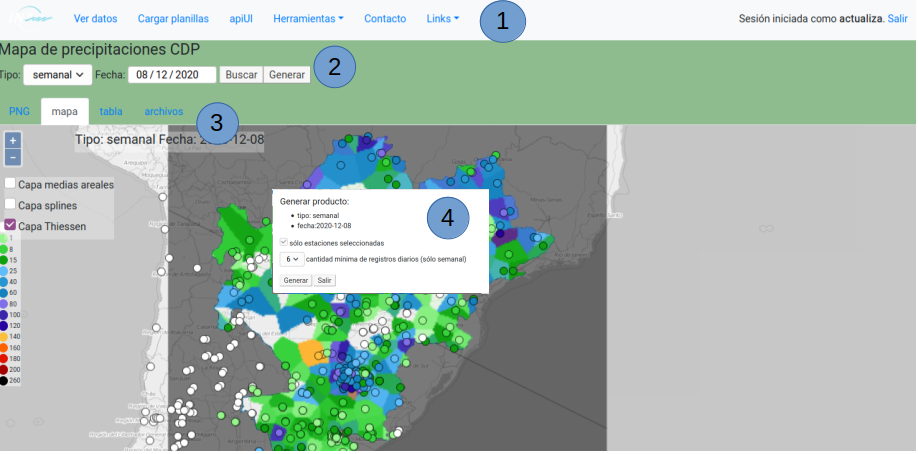

Mapa de precipitaciones CDP: Interfaz de generación, visualización y descarga
Descripción general
Consiste en una página web cuyo propósito es permitir a los usuarios generar el mapa de precipitación de la Cuenca del Plata (CDP) a paso diario y semanal a partir de los datos de estaciones pluviométricas almacenados en la Base de Datos (DB) para su utilización en informes así como el cálculo de la precipitación media areal diaria (PMAD) de los sistemas hídricos monitoreados. De esta manera los usuarios pueden realizar un control de calidad sobre los datos de entrada para dar como resultado un producto consistido.
Datos de entrada
- Registros de precipitación acumulada diaria 12Z (09 AM hora Argentina) de diversas fuentes, como el SMN, el CRC-SAS, ANA (Brasil), ACUMAR, entre otras. El listado completo de estaciones es definido por el Administrador del Sistema.
Productos generados
| Tipo |
procedimiento |
formato |
patrón nombre |
| imagen |
splines |
png |
pp_<dt>_<fecha>_surf.png |
| ráster |
splines |
tif |
pp_<dt>_<fecha>_surf.tif |
| texto(puntos) |
- |
geojson |
pp_<dt>_<fecha>.json |
| texto(puntos) |
- |
csv |
pp_<dt>_<fecha>.csv |
| imagen |
thiessen |
png |
pp_<dt>_<fecha>_nearest.png |
| ráster |
thiessen |
tif |
pp_<dt>_<fecha>_nearest.tif |
| imagen |
media areal |
png |
pp_<dt>_<fecha>_areas.png |
| texto(áreas) |
media areal |
geojson |
pp_<dt>_<fecha>_areas.geojson |
donde: <dt> es el intervalo de agregación: diario o semanal
<fecha> es la fecha inicial del periodo de agregación en formato AAAAMMDD
Estructura de la página
- Encabezado. Posee los vínculos a las otras páginas del sistema de información y a la página de login
- Formulario principal: aquí se selecciona el tipo de producto (diario o semanal) y la fecha inicial. Luego se ejecuta la búsqueda y/o la generación de producto
- Pestañas
- PNG: Muestra el producto imagen splines png
- Mapa: presenta un mapa navegable con las siguientes capas correspondientes al producto seleccionado/generado:
- Contorno de la cuenca del Plata
- Registros de precipitaciones puntuales
- Registros de precipitaciones medias areales (capa medias areales)
- imagen splines png (capa splines)
- imagen thiessen png (capa Thiessen)
El usuario puede navegar el mapa, y al cliquear sobre las estaciones se despliega una tabla que muestra los datos y metadatos y permite seleccionar (deseleccionar) las estaciones para incluirlas (excluirlas) de la generación de los productos. Los cambios en la selección de estaciones realizados aquí repercuten sobre la tabla de la 3ra pestaña, y viceversa.
- Tabla: presenta una tabla con los registros de precipitaciones puntuales junto con sus metadatos. Al cliquear en la casilla de la primera fila se selecciona/deselecciona la estación. Además, la segunda casilla presenta dos acciones posibles:

- ir a la interfaz de series temporales (/secciones) para visualizar y/o editar los registros
- ir al mapa para ver la ubicación de la estación
- Archivos: presenta vínculos de descarga de los productos generados
- Ventana diálogo de generar producto : se despliega cuando el usuario oprime el botón generar en el formulario principal. Muestra el tipo de producto y fecha seleccionados y permite seleccionar las siguientes opciones:
- sólo estaciones seleccionadas: al marcar esta opción excluimos de la generación de los productos a las estaciones que hayan sido deseleccionadas mediante el mapa o la tabla. Por defecto esta opción se encuentra marcada.
- actualiza medias areales: al marcar esta opción incluimos el cálculo de medias areales (sólo disponible para el producto diario). Por defecto esta opción se encuentra marcada.
- cantidad mínima de registros diarios (sólo semanal): opción para excluir estaciones que no tengan el mínimo de registros indicado. Valor por defecto: 6.

Procedimiento de uso
- Realizar login. Para poder generar productos el usuario debe tener permiso de escritura.
- En el encabezado, dirigirse a Herramientas->mapa de precipitaciones CDP
- En el formulario, seleccionar tipo y fecha y oprimir Buscar
- Si el producto ya existe se cargará en las pestañas. El usuario puede revisar el producto navegando el mapa o viendo la tabla, y puede descargar los archivos. Si detecta algún posible dato erróneo, puede:
- dirigirse a la interfaz de series temporales, corregir o eliminar el registro erróneo, regresar y volver a generar los productos, o
- deseleccionar la estación y volver a generar los productos seleccionando la opción sólo estaciones seleccionadas en la ventana de diálogo
- Si el producto no existe, va a desplegarse la ventana de diálogo generar producto. Oprima el botón generar para generar el producto o salir para cerrar la ventana de diálogo
- La generación de los productos puede demorar 30 segundos aproximadamente. Una vez finalizada la generación de los productos, los mismos serán desplegados en las pestañas. Si lo desea, el usuario puede repetir la revisión o buscar otro tipo y/o fecha mediante el formulario.
Notas
- Los productos generados a partir de esta interfaz son ingresados a la Base de Datos del Sistema de Información sobreescribiendo los productos preexistentes. Esto debe ser tenido en cuenta por el/los usuario/s asignado/s a esta tarea ya que los productos generados impactan sobre diversos informes así como también sobre la componente de modelación hidrológica.
- Los datos de entrada (registros puntuales de precipitación diaria) se actualizan entre las 9 y las 11 AM hora Argentina. Los productos no se generarán al menos que estén actualizados los registros de la red SYNOP SMN (tablas stations y stations_cdp).
- Para las PMAD deben generarse todos los productos diarios correspondientes al periodo deseado (generar el producto semanal no actualiza las PMAD).
- Si se desea incluir/excluir una estación en forma permanente debe solicitarse al Administrador del Sistema.
- Ídem para cambiar los parámetros de interpolación.
- Todos los productos se pueden descargar desde el repositorio HTTP del Sistema de Información: mapas_diarios mapas_semanales